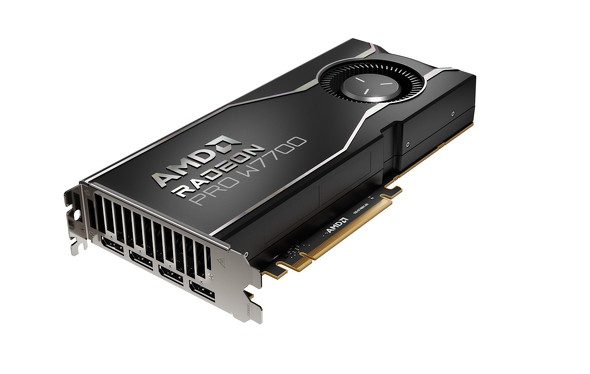

野球も変わりつつあるよね
侍ジャパン、韓国下しアジアＣＳ連覇！ 門脇が延長十回にサヨナラ打

アジアプロ野球チャンピオンシップ決勝（１９日、日本４ｘ－３韓国、東京Ｄ）野球日本代表「侍ジャパン」が延長十回タイブレークの末、韓国に逆転サヨナラ勝ちし、２０１７年の第１回大会に続く連覇を果たした。 侍ジャパンは大会初登板の先発・今井（西武）が三回に４番・盧施ファンに先制の２点二塁打を許したが、五回に４番・牧（ＤｅＮＡ）が左越えにソロ本塁打を放って１点差に詰め寄った。そして六回は１死三塁から８番・佐藤輝（阪神）の中犠飛で同点に追いついた。五回から登板した２番手根本（日本ハム）が３回を１安打無失点に抑えて流れを呼び込んだ。 ２－２の延長十回から無死一、二塁でスタートするタイブレークに突入。１点を勝ち越されたその裏、代打・古賀（西武）の犠打と牧の申告敬遠で１死満塁としたあと、坂倉（広島）の中犠飛でまず同点に追いついた。さらに万波（日本ハム）の申告敬遠で２死満塁とし、門脇（巨人）が左前打を放ち勝負を決めた。
横長のウィンドウってことぉ〜

レンズ交換式デジタルカメラや高倍率ズームレンズ付きのビデオカメラは、撮影時の画質や解像度が高い傾向にある。写真や動画をたくさん保存すると、カメラのメモリカードはあっという間にいっぱいになる。ゆえに、データ（ファイル）の定期的なバックアップは欠かせない。
日本のトイレはきれいで良かったよぉ

【ロサンゼルス１２日（日本時間１３日）＝丹羽政善通信員】米大リーグ、ドジャースの大谷翔平投手（２９）が本拠地で行われたパドレス戦の一回に４号ソロ本塁打を放ち、松井秀喜の日本選手最多に並ぶメジャー通算１７５号をマークした。憧れの存在に並び「日本の野球界にとっても大きなことだと思う」と語った。五回の二塁打で日米通算１０００安打にも到達。銀行詐欺容疑で訴追された元通訳の水原一平容疑者（３９）が裁判所に出廷した日の試合で、節目の本塁打を放った。 本拠地ドジャースタジアムの左中間へ、品のある優雅な放物線を描いた。一回１死。右腕キングの外角高め、見送ればボールの１５３キロの直球を振り抜いた。４万９６０６人の観衆は総立ち。大谷は右手人さし指を突き立て、ダイヤモンドを回った。 「個人的にもうれしいけど、日本の野球界にとっても大きいことじゃないかなと思う。プレートから外れている難しい球を本塁打にできているのは、基本的にはいいスイングの軌道だなと思う」 飛距離４０３フィート（１２３メートル）、打球速度１０７・３マイル（１７３キロ）。３試合ぶりの４号ソロで少年時代からの「憧れ」に追い付いた。メジャー通算１７５号とし、ヤンキースなどで活躍した松井秀喜の日本選手最多に並んだ。１０年、４９７０打席かかった松井氏の数字に７年、２９４１打席でたどり着き「小さい頃からずっと見てきた。同じ左打者として憧れている存在。そういう方に記録で並べたのは、自分にとって幸せなこと」。ドジャースに在籍した日本選手の通算最多本塁打でも野茂英雄の４本に並んだ。
AMDが“高コスパ”のプロ向けGPU「Radeon PRO W7700」を発表 実力をチェック！
AMDが“高コスパ”のプロ向けGPU「Radeon PRO W7700」を発表 実力をチェック！

AMDは11月13日（米国太平洋時間）、デスクトップワークステーション向けGPU「Radeon PRO W7700」を発表した。本GPUを搭載するグラフィックスカードは同日から発売される他、カードをあらかじめ組み込んだワークステーションも11月中から順次登場する予定だ。グラフィックスカードの想定販売価格は999ドル（約15万1400円）となる。
[Hyprland] Chatgpt helped me make a thing!
Hyprland 0.52 out now!

Hi fam, another Hyprland update time! There hasn’t been an update in a while, but we back. Work is also focused a bit on improving our new hyprtoolkit which will power all hyprland gui apps in the future. Anyways, hyprland. Breaking changes misc:disable_hyprland_qtutils_check has been moved to misc:disable_hyprland_guiutils_check to reflect qtutils being now archived in favor of guiutils. New stuff Tons of new stuff dropped: you can now mark submaps as automatically closing after a keybind has been executed new dispatcher: forceidle fullscreen now has set, unset and toggle for less IPC queries new CM options: dcip3, dp3 and adobe you can now set rotation for each input device that supports it noscreenshare now also available as a layerrule cursor:zoom_disable_aa for controlling whether you want a pixelated or blurry look when zooming into your cursor new modal prop for windowrules and much more!
PHP 8.5 が出たので、パイプライン演算子を使ってログ整形ツールを書いてみた

今回は新しい取り組みとして、はてなブログでエンジニアっぽいことを書きます。 ソースコードとか書かれていて、エンジニアじゃない方にはよくわからない内容になってるかと思うのでご了承くださいください。。🙇♂️ ( 今までずっとポエムを書いていたので、違和感すごいと思います ) ということで、本題です。 PHP 8.5 が出ましたね！ 実はわたし、一応 PHPer です。 今回のアップグレードの目玉機能である パイプライン演算子に興味があったので、使ってみることにします。 本ブログでは、文字列操作が必要な "ログ整形 CLI ツール" を作ります。